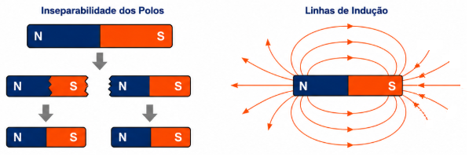
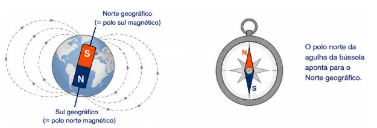
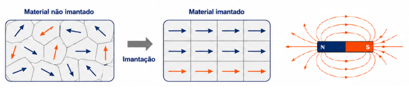

R 1: Atração e Repulsão
Enunciado: Se aproximarmos o polo sul de um ímã do polo sul de outro ímã suspenso, o que ocorrerá?
Resolução: Ocorrerá uma força de repulsão, pois polos de mesmo nome se repelem.
3º Ano | Aula 25: Magnetismo - Ímãs e Campo Magnético Terrestre
O Magnetismo é o ramo da física que estuda as propriedades dos ímãs e as interações magnéticas. Um ímã possui dois polos: Norte (N) e Sul (S). Polos de mesmo nome se repelem e polos opostos se atraem.
A Terra se comporta como um grande ímã, possuindo um campo magnético que nos protege de radiações solares e permite a orientação através da bússola.

O polo norte geográfico da Terra corresponde, aproximadamente, ao polo sul magnético do planeta. É por isso que o polo norte da agulha da bússola (que é um ímã) aponta para o Norte geográfico: ele está sendo atraído pelo polo magnético oposto.

Materiais como o ferro possuem pequenos "ímãs elementares" em seu interior. Quando esses domínios estão alinhados, o material torna-se um ímã (imantação).

Utilizada há séculos para navegação, a agulha imantada se alinha com as linhas do campo magnético terrestre, indicando a direção Norte-Sul.
O campo magnético da Terra desvia partículas carregadas do Sol (vento solar) para os polos. Quando essas partículas atingem a atmosfera, criam o espetáculo de luzes conhecido como Aurora Boreal (Norte) ou Austral (Sul).
Enunciado: Se aproximarmos o polo sul de um ímã do polo sul de outro ímã suspenso, o que ocorrerá?
Resolução: Ocorrerá uma força de repulsão, pois polos de mesmo nome se repelem.
Enunciado: Um ímã em barra é dividido em três pedaços. Quantos polos magnéticos teremos no total ao final?
Resolução: Como os polos são inseparáveis, cada pedaço se torna um novo ímã completo com 2 polos. Total: $3 \times 2 = \mathbf{6\text{ polos}}$.
Enunciado: Para onde aponta o polo sul da agulha de uma bússola?
Resolução: O polo sul da agulha aponta para o Sul Geográfico (que é onde se localiza o polo Norte Magnético da Terra).
Enunciado: Cite três exemplos de materiais que podem ser fortemente atraídos por ímãs.
Resolução: Ferro, Cobalto e Níquel (conhecidos como materiais ferromagnéticos).
Enunciado: Qual o sentido das linhas de campo magnético na região externa a um ímã permanente?
Resolução: As linhas saem do polo Norte e entram no polo Sul.
Enunciado: É possível isolar apenas o polo Norte de um ímã? Explique.
Enunciado: Por que aquecer fortemente um ímã pode fazer com que ele perca suas propriedades magnéticas?
Enunciado: O Norte Geográfico coincide exatamente com o Sul Magnético da Terra?
Enunciado: Um ímã atrai um prego de ferro. O prego também atrai o ímã? Explique.
Enunciado: Qual a importância do campo magnético terrestre para a manutenção da vida no planeta?
Abaixo da superfície da Terra, o polo magnético que se localiza próximo ao polo Norte Geográfico é o:
A) Polo Norte Magnético.
B) Polo Sul Magnético.
C) Equador Magnético.
D) Polo Leste Magnético.
E) Não existe polo magnético na Terra.
As linhas de indução de um campo magnético uniforme são:
A) Circulares e concêntricas.
B) Retas paralelas e igualmente espaçadas.
C) Convergentes para um único ponto.
D) Divergentes a partir de um polo norte.
E) Radiais.
Aproximando-se um ímã de uma limalha de ferro, percebe-se que a limalha se adere mais intensamente:
A) No centro do ímã.
B) Apenas no polo norte.
C) Apenas no polo sul.
D) Nas extremidades (polos).
E) Em toda a superfície do ímã igualmente.
Uma agulha magnética, livre para girar, orienta-se na direção Norte-Sul da Terra. Isso ocorre porque:
A) A Terra é um vácuo.
B) A gravidade puxa a agulha.
C) A agulha sofre a ação do campo magnético terrestre.
D) O ferro da agulha é atraído pelo sol.
E) A rotação da Terra obriga a agulha a girar.
Dois ímãs em forma de barra são colocados próximos. Ocorrerá repulsão se aproximarmos:
A) Norte de um com o Sul do outro.
B) O meio de um com o polo de outro.
C) Sul de um com o Sul do outro.
D) Qualquer metal do ímã.
E) Dois pedaços de ferro não imantados.